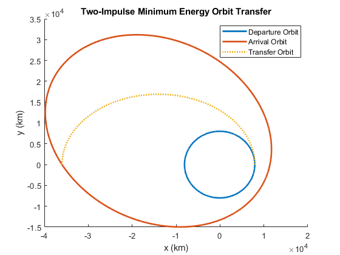

Contents
clear; clc; close all;
MU = 398600;
PI = 3.141592654;
a1 = 8000;
e1 = 0.01;
f1 = 30;
r1 = getRadius(a1, e1, f1);
v1 = getVelo(r1, a1);
a2 = 27000;
e2 = 0.6;
f2 = 210;
r2 = getRadius(a2, e2, f2);
v2 = getVelo(r2, a2);
delta_f = f2-f1;
a_T = get_aMin(r1, r2, delta_f);
p_T = getPT(a_T, r1, r2, delta_f);
e_T = (p_T / r1) -1;
v1T = getVelo(r1, a_T);
v2T = getVelo(r2, a_T);
t = PI * sqrt((a_T^3) / MU);
dV1 = abs(v1T - v1);
dV2 = abs(v2T - v2);
Plotting Values
fvec = 0:0.1:360;
r1vec = (a1*(1-e1^2)) ./ (1+e1*cosd(fvec));
xvec1 = r1vec.*cosd(fvec);
yvec1 = r1vec.*sind(fvec);
rTvec = (a_T*(1-e_T^2)) ./ (1+e_T*cosd(fvec));
xvecT = rTvec.*cosd(fvec);
yvecT = rTvec.*sind(fvec);
r2vec = (a2*(1-e2^2)) ./ (1+e2*cosd(fvec));
xvec2 = r2vec.*cosd(fvec-30);
yvec2 = r2vec.*sind(fvec-30);
figure(1)
hold on
plot(xvec1, yvec1, LineWidth=2)
plot(xvec2, yvec2, LineWidth=2)
plot(xvecT(1:1801), yvecT(1:1801), ':', LineWidth=2)
title('Two-Impulse Minimum Energy Orbit Transfer')
xlabel("x (km)")
ylabel("y (km)")
legend('Departure Orbit', 'Arrival Orbit', 'Transfer Orbit')
hold off
exportgraphics(gca,"HW2_Problem1_Figure.jpg");

Functions
function radius = getRadius(a_input, e_input, f_input)
p = a_input * (1 - (e_input^2));
radius = p / (1+e_input*cosd(f_input));
end
function aMinT = get_aMin(r1_in, r2_in, df)
sqrtTerm = sqrt( r1_in^2 + r2_in^2 - 2*r1_in*r2_in*cosd(df) ) ;
aMinT = 0.25 * (r1_in + r2_in + sqrtTerm);
end
function P_output = getPT(amin, r1_in, r2_in, df)
k = r1_in*r2_in*(1-cosd(df));
m = r1_in*r2_in*(1+cosd(df));
l = r1_in + r2_in;
P_output = (k*m - 2*amin*k*l) / (4*amin*m - 2*amin*l*l);
end
function velo = getVelo(r_input, a_input)
MU = 398600;
velo = sqrt(2 * MU * ( (1/r_input) - (1 / (2*a_input)) ) );
end